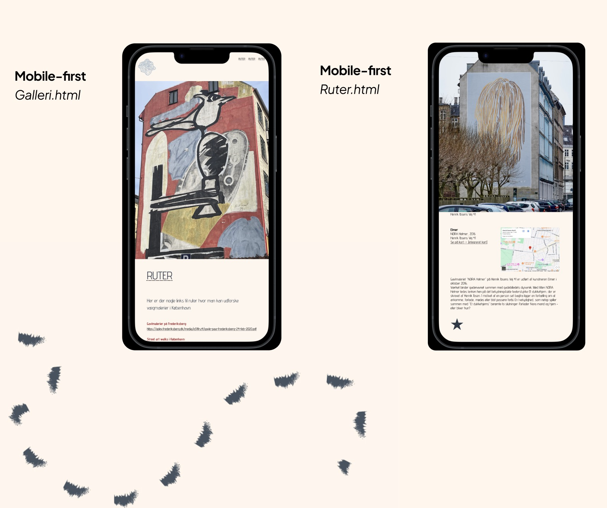
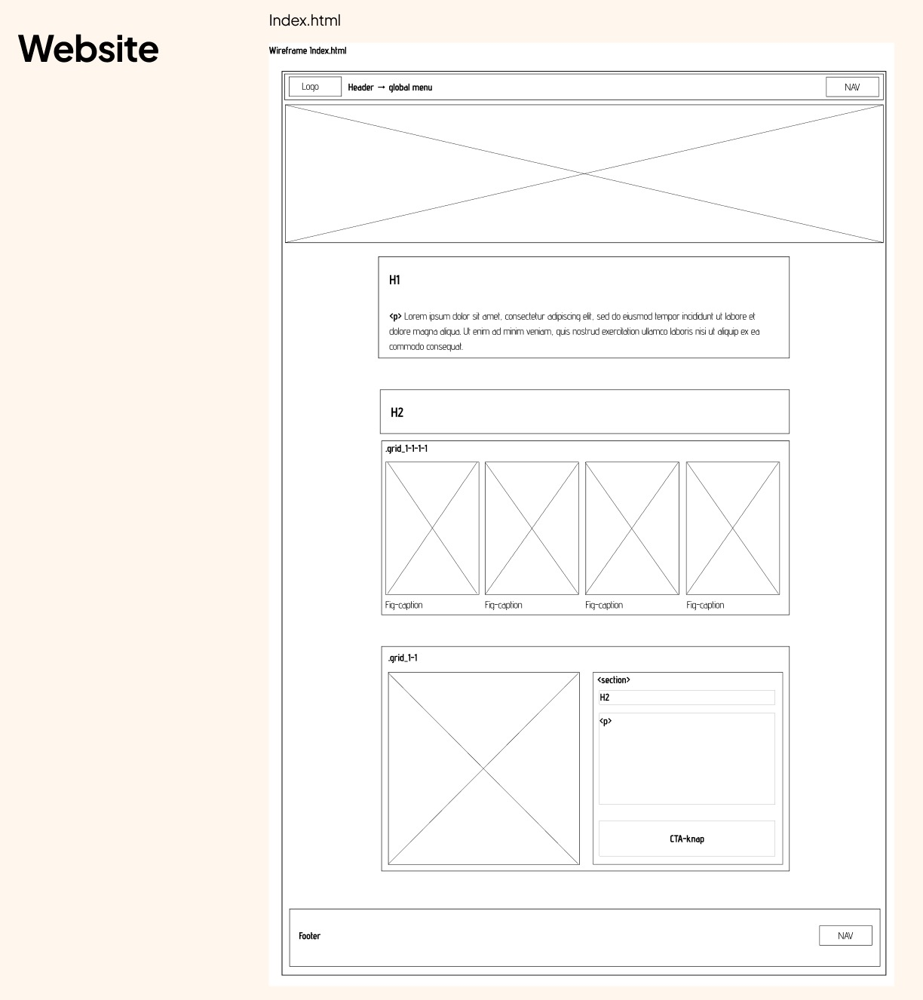
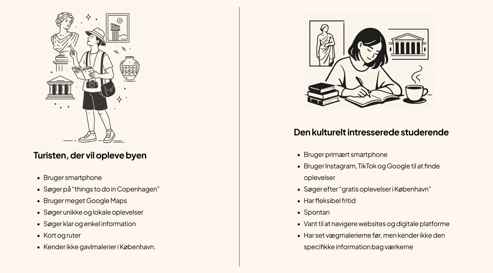
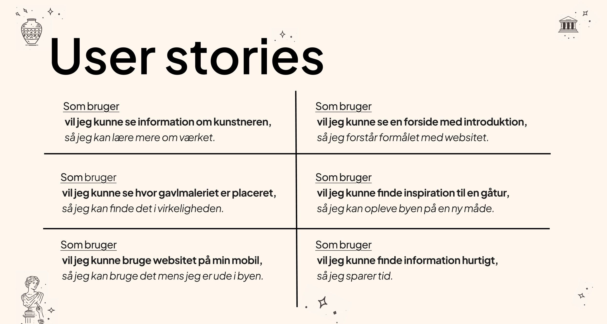

TEMA 3
GRUNDLÆGGENDE UX/UI
I dette tema arbejdede vi med brugeroplevelse (UX) og brugergrænsefladedesign (UI). Formålet var at få indsigt i de metoder og værktøjer, der anvendes til at udvikle digitale løsninger med fokus på brugerens behov og oplevelse.
Derudover lærte vi at dokumentere og formidle vores designproces samt præsentere resultater fra research og brugertests.
Opgave: Emnesite
Emnesitet var det første større projekt, hvor vi selv havde ansvar for både idéudvikling og indholdsproduktion. Vi skulle vælge et selvvalgt emne og udvikle et website gennem hele designprocessen – fra de første undersøgelser til det færdige produkt.
Projektet var opdelt i fem faser:
- Research og idéudvikling
- Digital prototype
- Kodet website
- Præsentation
- Dokumentation
Fra idé til testet løsning
Gennem forløbet arbejdede vi med en række UX- og UI-metoder, herunder research, design brief, målgruppeanalyse, inspirationssøgning, grafisk analyse og ideudvikling. Vi udviklede desuden moodboards, wireframes, mockups, styletiles og interaktive prototyper for at visualisere og afprøve vores idéer.
For at evaluere designet gennemførte vi forskellige brugertests, blandt andet tænke-højt-test, 5-sekunders-test og Lighthouse-test. Vi arbejdede også med user stories for bedre at forstå brugernes behov og forventninger. Projektet gav en grundlæggende forståelse for, hvordan designbeslutninger kan understøttes af research og test gennem hele udviklingsprocessen.
Koncept
Til emnesitet valgte jeg at arbejde med en konceptuel løsning, hvor jeg udviklede en samlet guide til oplevelsen af gavlmalerier i København. Idéen tog udgangspunkt i at samle eksisterende information og gøre den mere overskuelig og tilgængelig for brugeren.

Fokus og formål
Sitet har fokus på overblik, ruter, information og inspiration, så brugeren nemt kan navigere mellem værker og oplevelser. Formålet var at strukturere en ellers spredt informationsmængde og skabe en mere visuel og engagerende måde at udforske gavlmalerier på i København.

Målgruppe
Jeg udarbejdede selv en målgruppe for siden, bestående af en primær og en sekundær målgruppe.

User stories
Med udgangspunkt i min målgruppeanalyse identificerede jeg en række user stories. Disse kunne jeg løbende vende tilbage til for at forbedre brugeroplevelsen ved at sikre, at siden imødekommer brugernes behov og forventninger.

Proces
En central del af temaet var at dokumentere vores proces.
Her kan du se hele min process frem til mit færdige produkt.